One checkout for every appointment at the counter.
Software that runs salons, barbershops and spas. Booking, payments, staff and clients, in one place.
One clientRachel books a cut and color with two stylists, back to back.
Plus oneHer daughter tags along for a trim. Rachel pays for both.
CheckoutThe front desk rings up three tickets: three tips, three signatures, while the line grows.
Build one flexible checkout for every multi scenario: one client with many appointments, or many clients paying together.
One client, many appointments
A single checkout for the same client with multiple appointments on the same day.
Many clients, one checkout
A single checkout for multiple clients and appointments on the same day.
Checkout is one of the most sensitive flows, and ours was already longer than competitors’. Prototyping both orders, one close to production and one aligned with the industry, settled the direction before going deep.
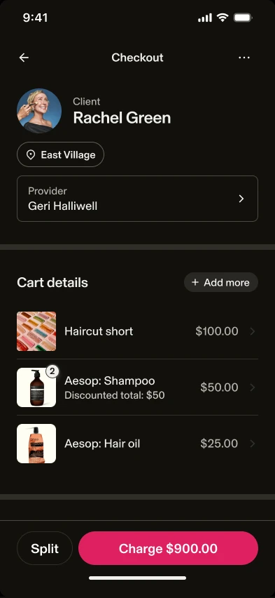
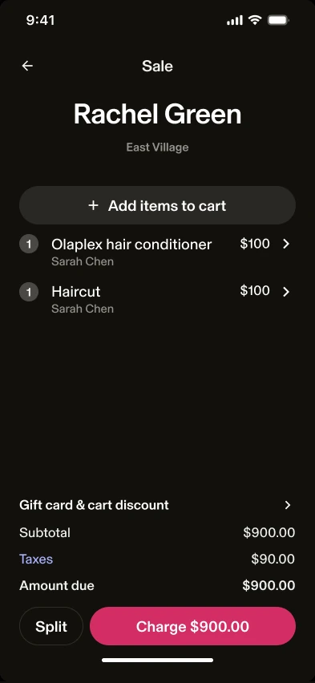
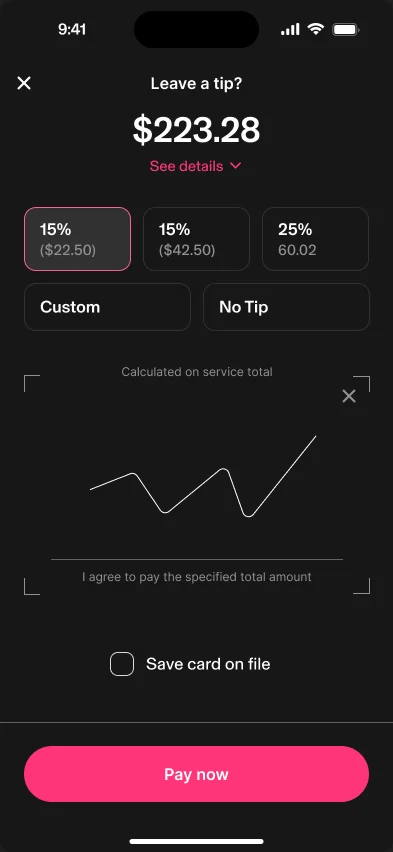
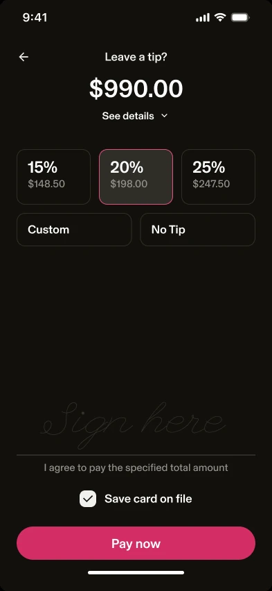
Three tickets meant three tip prompts. Now one tip covers the visit, split across providers by service value.
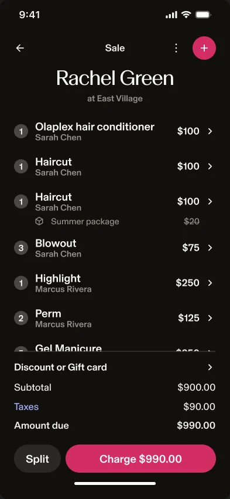
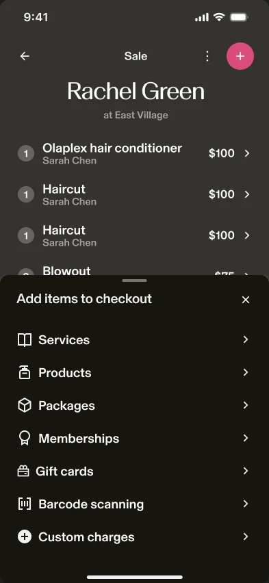
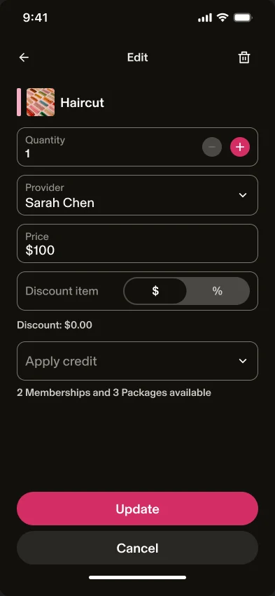
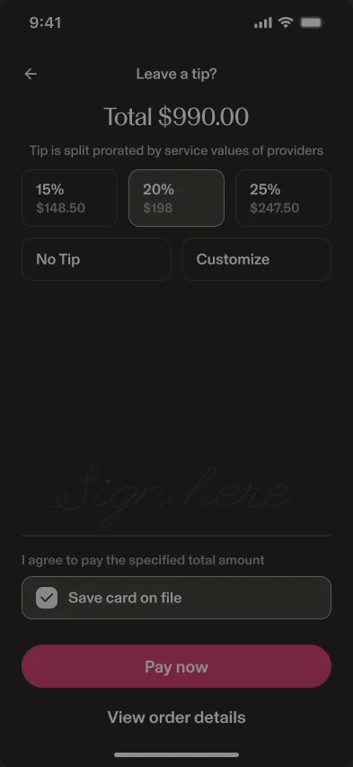
Three tickets at the desk become one checkout: one cart, one tip, one signature.
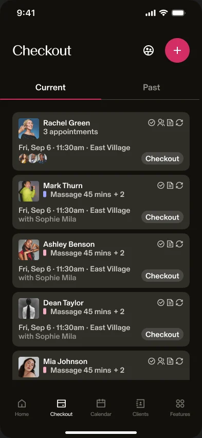
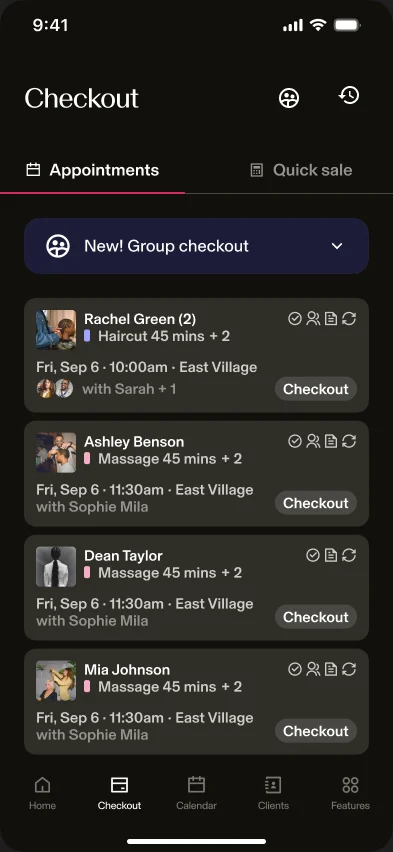
Paying for someone else meant a second checkout. Same-day appointments now group into one, with a clear way in.
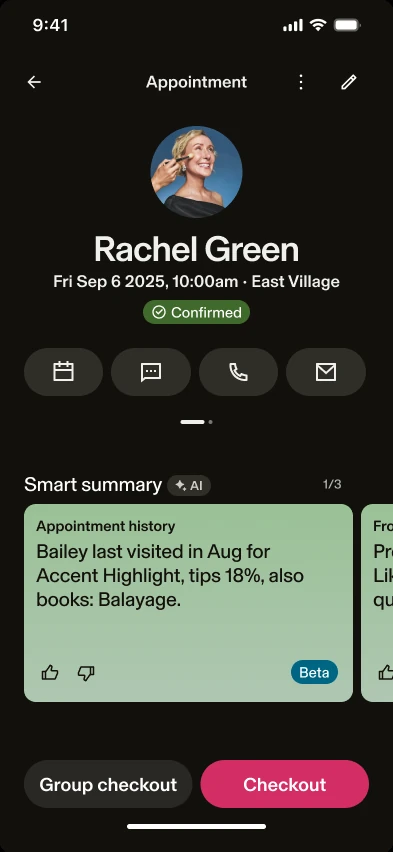
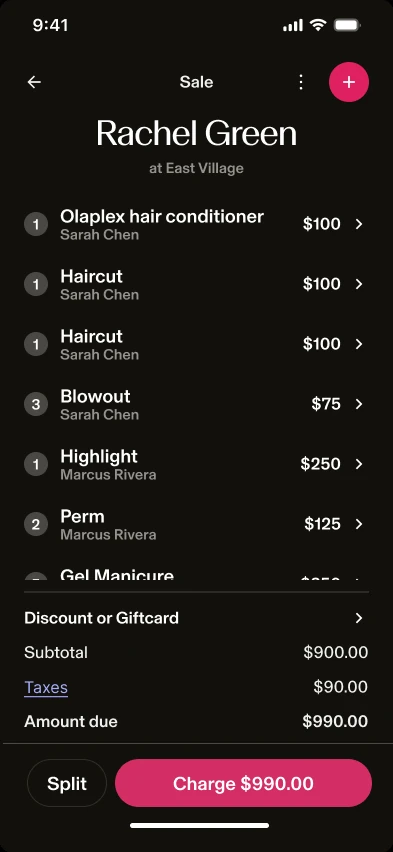
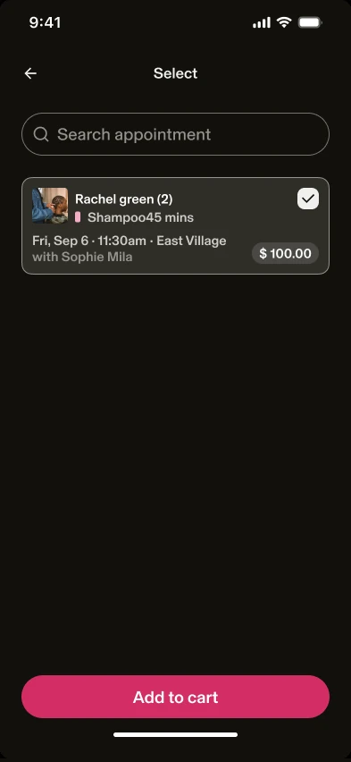
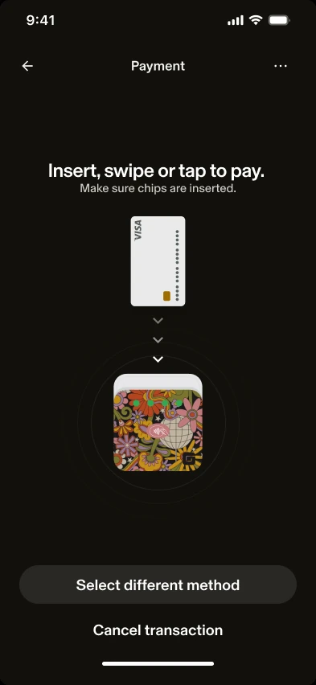
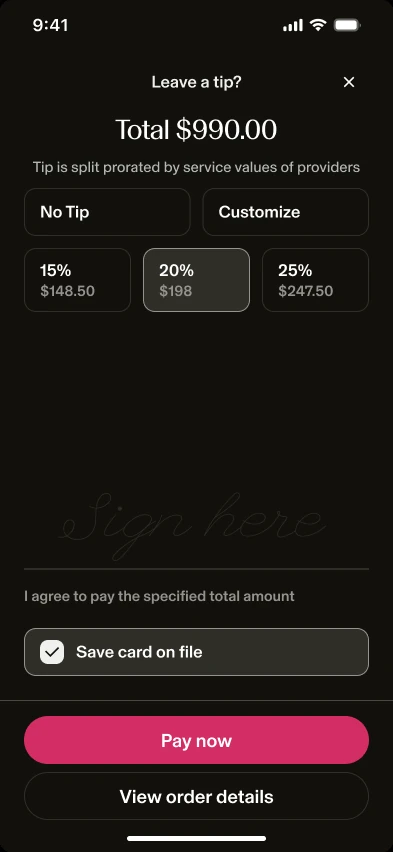
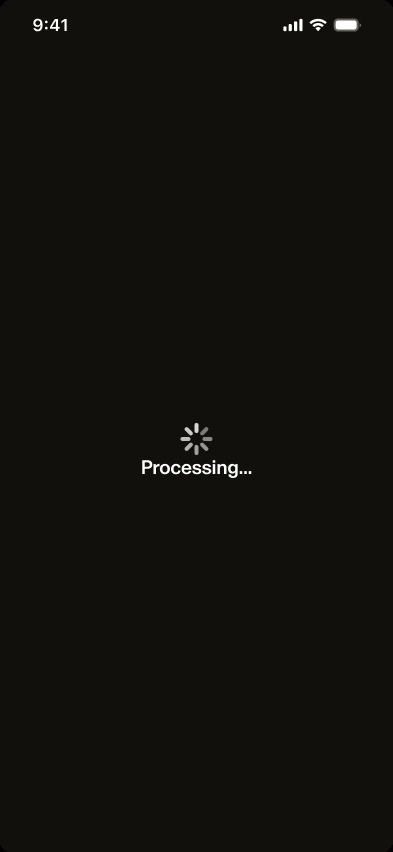
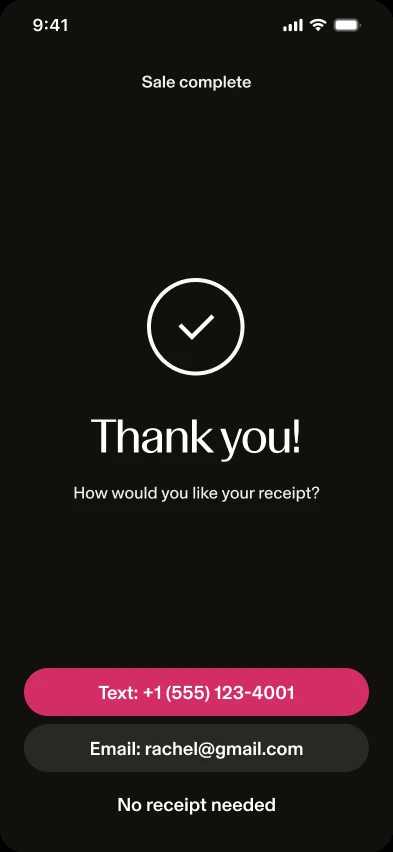
From her appointment, Rachel’s other booking joins the same sale, so she pays once. Every transition is the prototype’s own.
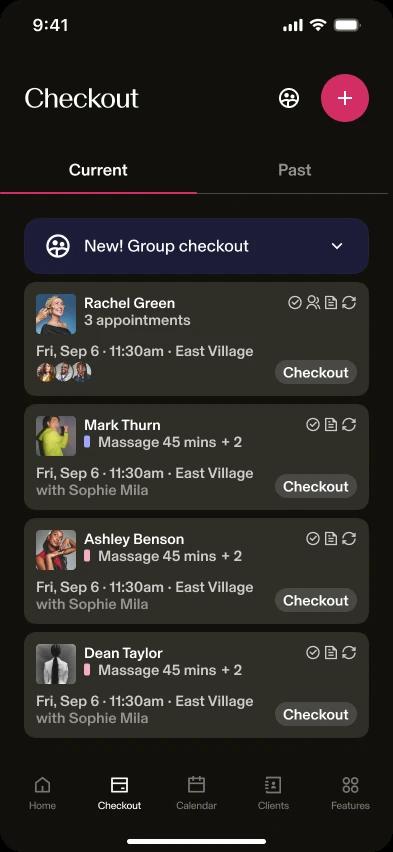
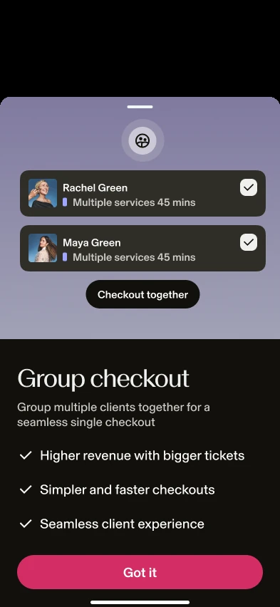
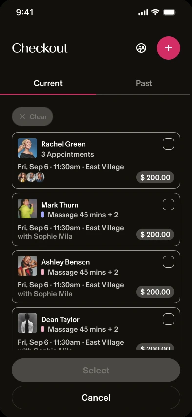
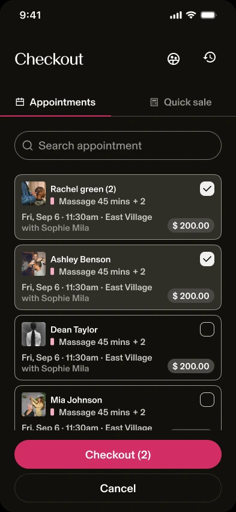
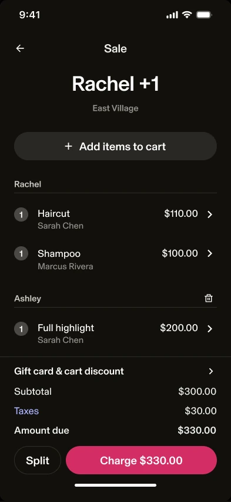
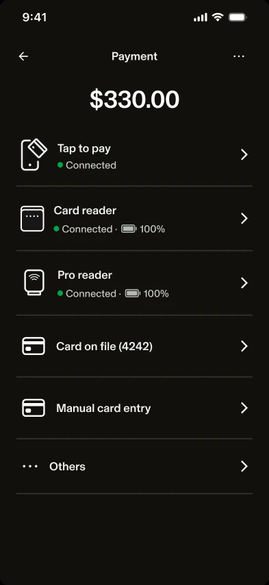
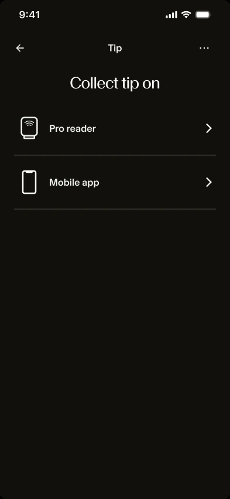
Two clients, picked straight from the list, settle in one sale with one payment and one tip.